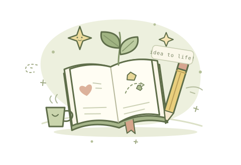

AI 产品设计
从用户真正要完成的任务出发，设计清晰、自然、有温度的产品体验。
HELLO, CURIOUS HUMAN!
你好，我是 Chengmu She，一名喜欢把好奇心做成真实产品的 AI 创作者。
我相信好的工具应该清晰、温柔，而且真的能帮上忙。这里是我的小小世界：有正在生长的想法、可以亲手体验的应用，还有四位陪我一起工作的卡通伙伴。

一点好奇心，WHAT I LOVE TO DO
从用户真正要完成的任务出发，设计清晰、自然、有温度的产品体验。
连接前端界面、模型 API、数据和后端服务，把完整流程落到代码里。
喜欢记录、拆解和分享，把复杂的知识整理成更容易理解的内容。
每一个小项目，都是一次认真回答。
谢谢你来这里，希望你能找到一点灵感。